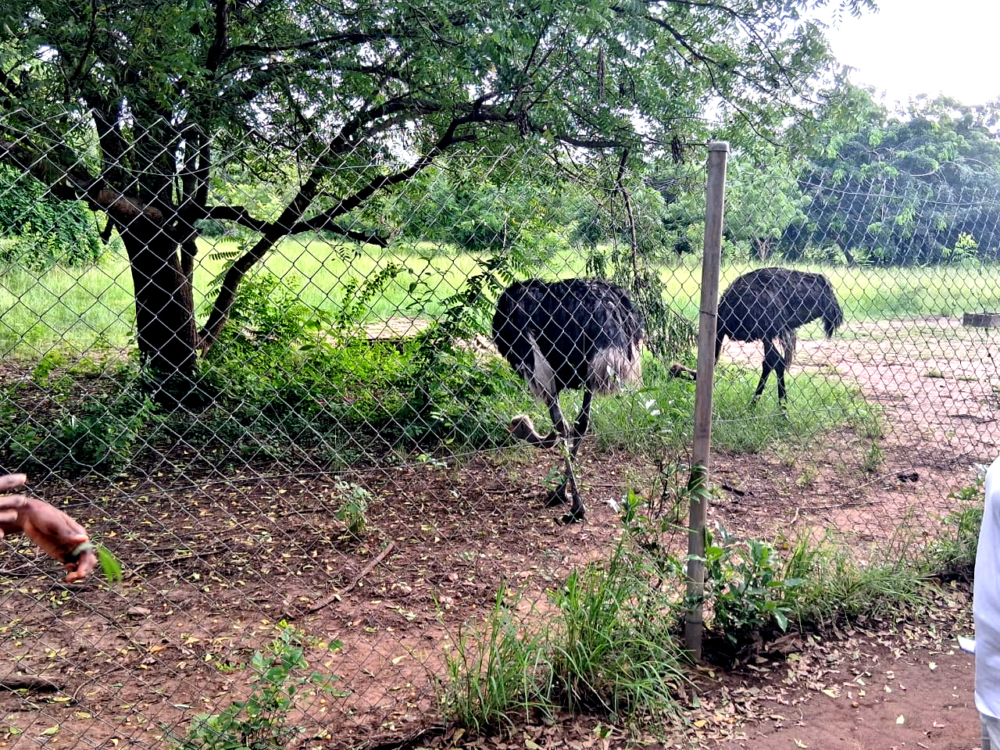
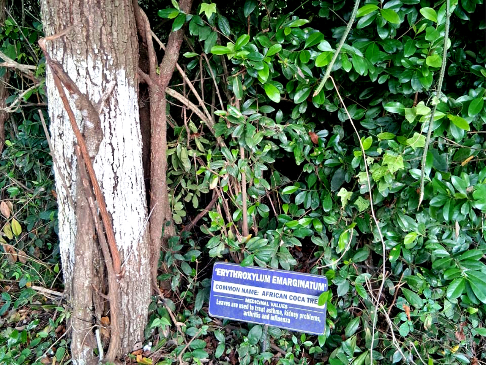

Environmental conservation remains one of the most important responsibilities of our generation. Through education, collaboration and community participation, we can protect our natural resources while creating a more sustainable future for generations to come.
As part of its commitment to environmental sustainability, TIMOSA Foundation organized an educational visit to the Shai Hills Resource Reserve to expose participants to Ghana's unique biodiversity, wildlife conservation efforts and sustainable environmental management practices.
Why This Visit Matters
The visit provided participants with an opportunity to connect classroom knowledge with real-life environmental conservation. It also highlighted the importance of protecting wildlife, forests and natural ecosystems through responsible actions and public awareness.
Learning Through Experience
The field visit offered participants the opportunity to observe wildlife and natural ecosystems firsthand. Guided by experienced conservation officers, the team explored different sections of the reserve while learning about Ghana's rich biodiversity and the importance of protecting endangered species.
Beyond sightseeing, the experience encouraged meaningful discussions on environmental stewardship, climate resilience, and how communities can contribute to protecting natural resources through sustainable practices.
"Protecting nature today ensures that future generations inherit a healthier environment, stronger communities and a more sustainable world."
Key Objectives of the Visit
- Promote environmental education and awareness.
- Encourage biodiversity conservation.
- Learn about Ghana's protected wildlife.
- Promote responsible eco-tourism.
- Encourage sustainable natural resource management.
- Inspire young people to become environmental champions.

Wildlife Conservation
During the tour, participants observed several wildlife species in their natural habitat while learning about ongoing conservation efforts within the reserve. The visit highlighted how protected areas contribute to biodiversity preservation, scientific research, education, and sustainable tourism.
Conservation officers also explained the challenges facing wildlife, including habitat destruction, climate change, illegal hunting, and human activities that threaten ecosystem stability. These discussions reinforced the importance of collective action in safeguarding Ghana's natural heritage.

Indigenous Medicinal Plants
One of the most fascinating parts of the visit was learning about the indigenous medicinal plants that grow naturally within the reserve. Conservation officers explained how several native species have been used by local communities for generations to support traditional healthcare practices.
Participants discovered that protecting forests and natural habitats goes beyond conserving wildlife. Healthy ecosystems also safeguard valuable plant species that contribute to medical research, food security, cultural heritage and sustainable livelihoods.
Key Lessons Learned
- Nature is one of Ghana's greatest national assets.
- Biodiversity supports healthy ecosystems and communities.
- Environmental conservation requires collective action.
- Young people play an important role in protecting the environment.
- Responsible tourism contributes to conservation and local economic development.
Challenges Facing Conservation
While Ghana's protected areas continue to preserve important ecosystems, they also face growing environmental pressures. Climate change, illegal logging, bushfires, habitat fragmentation and pollution threaten biodiversity and the sustainability of natural resources.
These challenges demonstrate why environmental education, stronger partnerships and community participation remain essential for protecting forests, wildlife and water resources for future generations.
Our Commitment Going Forward
TIMOSA Foundation remains committed to promoting environmental sustainability through education, advocacy, tree planting, biodiversity conservation and community engagement. We believe that lasting environmental change begins with informed citizens, collaborative partnerships and practical action.
Future initiatives will continue to empower young people, women, schools and local communities to become active participants in protecting Ghana's rich natural heritage while supporting sustainable development across the country.
Conclusion
Our visit to the Shai Hills Resource Reserve served as a powerful reminder that protecting the environment is a shared responsibility. Every forest, river, wildlife species and ecosystem contributes to healthier communities, stronger livelihoods and a more sustainable future.
Through education, awareness and collaboration, TIMOSA Foundation will continue to promote environmental conservation, climate action and community development across Ghana. Together, we can inspire positive change and preserve our natural heritage for future generations.
TIMOSA Foundation
TIMOSA Foundation is a non-profit organization committed to environmental sustainability, community development, education, climate resilience and social inclusion through innovative and impactful programmes across Ghana.